说明：策略演练使用说明
一、背景
在修改线上生效的场景配置、规则、因子、因子工具、规则组、数据接口、参数等对象时，为降低人工操作引入的未知风险，通过演练环境模拟线上执行情况，从而评估修改的影响减少策略部署风险，提高策略迭代效率
二、名词解释
策略演练：策略可以在非线上环境进行指定对象逻辑的修改，通过线上同流量模拟执行情况。
逻辑信息：因子或规则的表达式、类型；场景配置下规则的状态、决策、优先级
三、操作指南
1.用户操作流程说明
2.Quick Start
3.详细操作流程说明
策略演练入口：Plus工具中心-->策略演练
测试环境网址：https://zeus.mis.rc.test.sankuai.com/data_zeus_static/#/strategyDrillList
线上环境网址：https://zeus.mis.rc.sankuai.com/data_zeus_static/#/strategyDrillList
Step1:创建演练任务
|
说明 |
页面 |
|---|---|
|
【入口】 Plus工具中心-->策略演练 -->创建演练任务
|
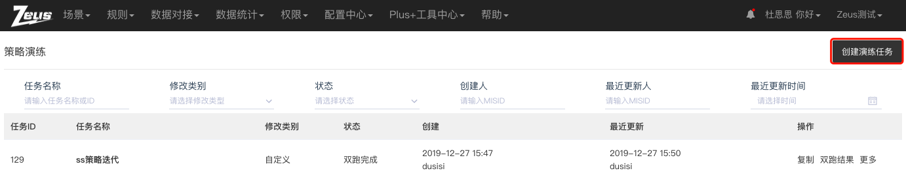 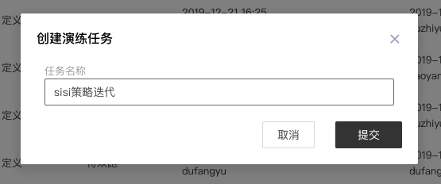 |
|
|

Step2:修改策略
|
说明 |
页面 |
|---|---|
|
【修改】
|
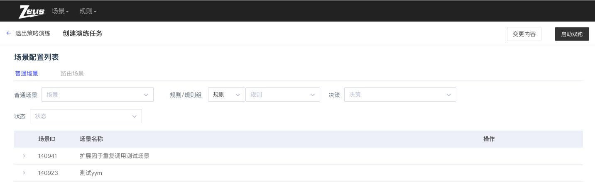 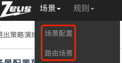 
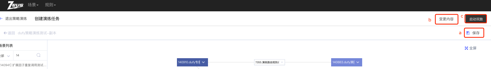 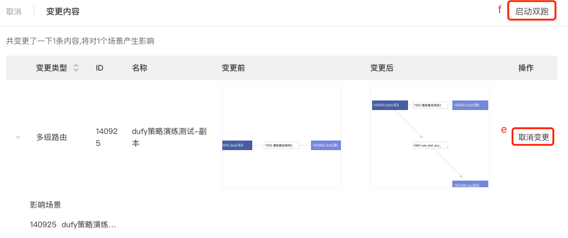 |
Step3:启动双跑
|
说明 |
页面 |
|---|---|
|
【启动双跑】
|
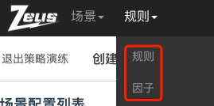
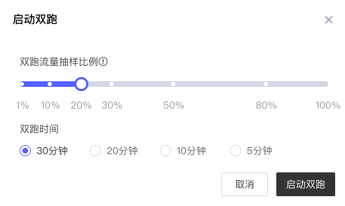 |


Step4:查看双跑结果
|
说明 |
页面 |
|---|---|
|
【查看双跑结果】
|
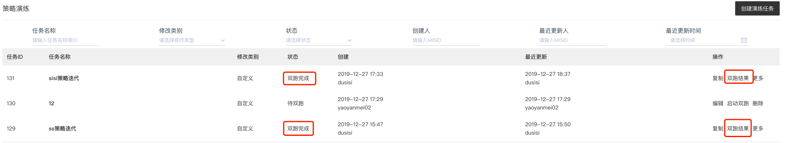 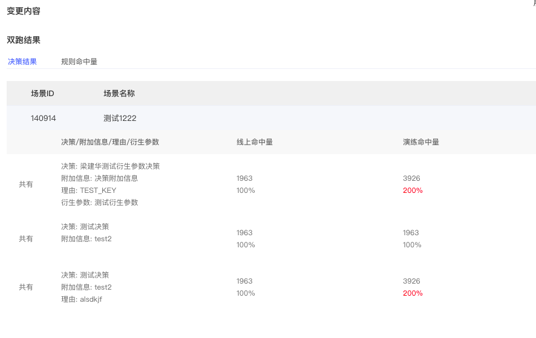 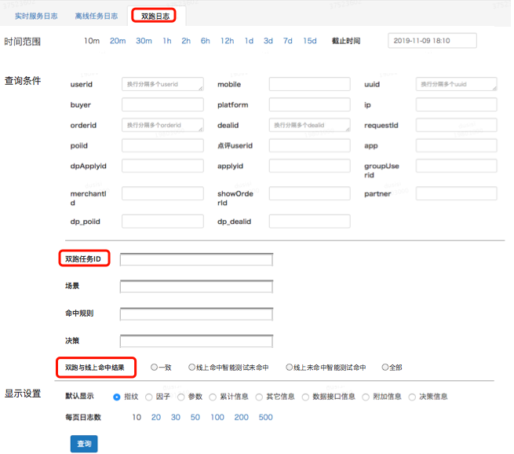 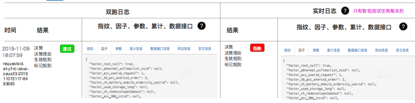 |
Step5:上线通知、审批申请和一键上线
|
说明 |
页面 |
|---|---|
|
【上线通知】
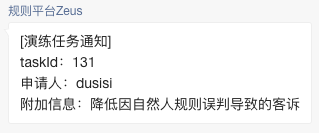 |
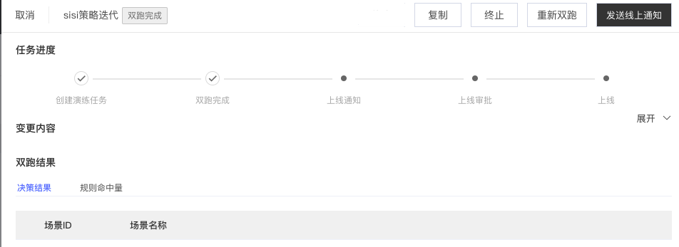 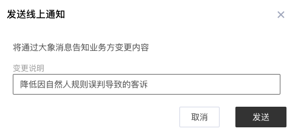 |
|
【审批申请】 3.已经发送上线通知的演练任务，可以在列表页面/详情页面进行申请上线 ⚠️发送通知之后无强制时间，可直接申请上线 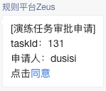 4.业务负责人将通过大象收到上线审批申请，可直接 |
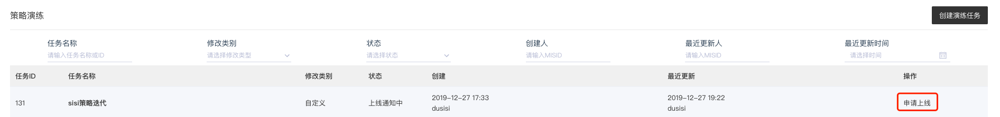 |
|
【一键上线】 5.审批通过的任务可以进行一键上线 6.点击一键上线后会出现上线确认信息，需用户手动填写“TOP1差异以确认上线“ ⚠️避免用户通过点点点无法明确感知数据波动的风险 7.会存在上线失败的情况，出现该情况原因： 其他用户在您修改期间也对相同的策略进行了修改，存在修改冲突。 解决办法：系统会提示谁也进行了修改，请您团队内部进行协商，若确认您仍需要进行修改，需要将当前任务终止，复制演练任务重新进行新逻辑双跑验证后进行上线操作 |
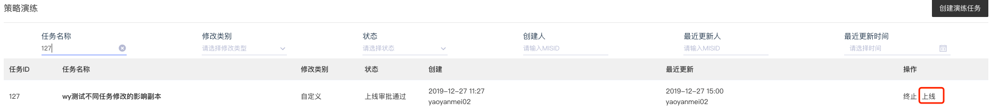 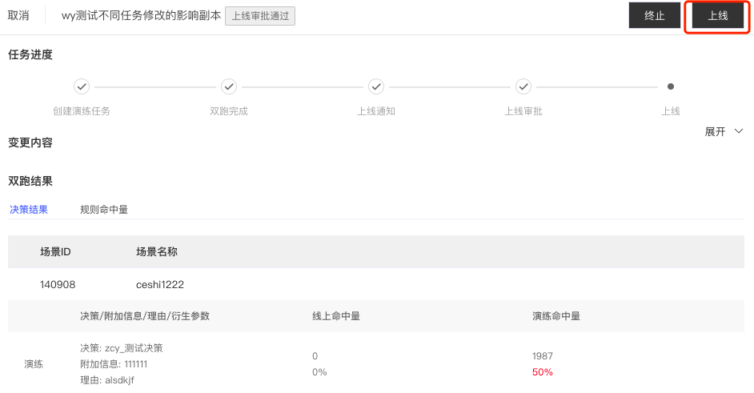 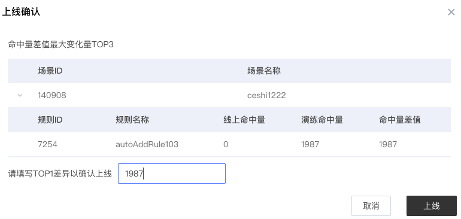 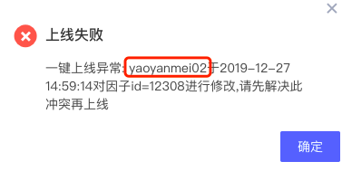 |
任务复制
|
说明 |
页面 |
|---|---|
|
【复制】 1.双跑完成、任务终止的任务支持复制操作 2.点击复制后需要对演练任务重新命名，提交信息后刷新页面，在策略演练列表中可查看到相关的信息 3.复制后的任务等同于新的演练任务可进行双跑、上线等操作 |
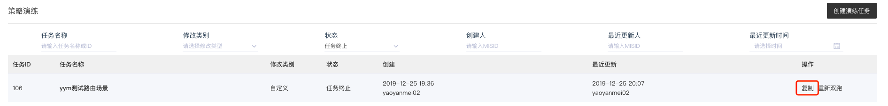 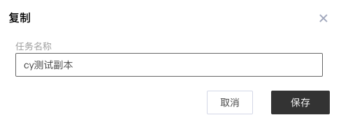 |
4.特殊说明
策略演练模式下，不支持决策附加信息和决策衍生参数的模版修改、不支持累计因子、名单库（上海）因子修改；
四、FAQ
Q1：提交策略演练后，修改的信息在哪里能查询到？
--A：可以到策略演练页面中查看，点击任务名称即可；
Q2：如何确定策略演练的数据符合预期？
--A：有两种方式（1）通过“双跑结果”数据中的线上命中量和命中率数据确认，修改前后命中数据波动是否符合预期
（2）通过策略演练执行期间的实时日志查看具体数据执行是否符合预期，可通过演练任务ID、规则ID/userid等日志查询相关参数查询
Q3：终止后的策略演练任务还可以再次重启么？
--A：不可以，只能通过复制任务，再进行双跑
Q4：为什么要有发送上线通知？
--A：因存在多业务方共用的情况，当一个业务方修改时会影响其他业务方，因此发送通知规避因信息传递不到位导致的未知风险
Q4：双跑标记最长时间为30分钟，想要延长双跑标记时间可以么？
--A：可以，点击重新双跑即可；
Q5：策略演练任务平均耗时情况？
--A：（1）使用紧急上线流程---依赖审批响应，最短1分钟；（2）不使用紧急上线流程--除去验证数据是否符合预期人工时间，最短30分钟；
Q6：紧急上线流程审批人是谁？
--A：修改人所在业务方的负责人，即在【权限】-->【业务方管理】-->【负责人】
Q7：不支持哪些信息的修改？
--A：不支持累计因子、名单库（上海）因子、决策信息的修改；
Q8：双跑期间有2000条请求，设置抽样比例50%，为什么实际双跑流量是986不等于1000条
--A：依赖于抽样逻辑使用的底层算法，相对误差较小，无限趋近于比例值
Q9：为什么点击上线后还有上线确认需要填写的弹框？
--A：分析历史case以及历史项目经验，用户尝尝因点点点行为形成惯性操作思维，因此填写弹框可避免用户通过点点点无法明确感知数据波动的风险；
Q10：双跑结果中的“共有、线上和演练”是什么意思？
--A：因演练任务包含场景配置、规则和因子的逻辑修改，其中场景配置中可能存在新增规则或决策，删减规则或决策，为便于用户对双跑结果数据的解读，对增删改行为进行了标识
共有：指该决策/规则是经过修改操作，线上演练可对比
线上：指该决策/规则在演练任务中删除了，只有线上命中情况
演练：指该决策/规则在演练任务中增加了，只有演练命中情况
Q11：提示双跑完成，任务状态显示双跑完成，但操作中仅显示“终止”，无法查看结果为什么？
--A：双跑已经完成，但数据统计入库汇总，存在1分钟左右的误差，等一会即可；
Q12：普通场景的批量编辑后，取消变更会联动把这次批量编辑的内容都取消掉？
--A：因为取消变更是针对某一次操作进行的，如果这次操作影响到了2条变更内容，那么会同时把这两条变更内容都取消。
Q13：双跑演练中，双跑的数据涉及外部接口会增加下游请求量么？
--A：会增加必要的请求量，但是会尽最大程度避免重复请求调用